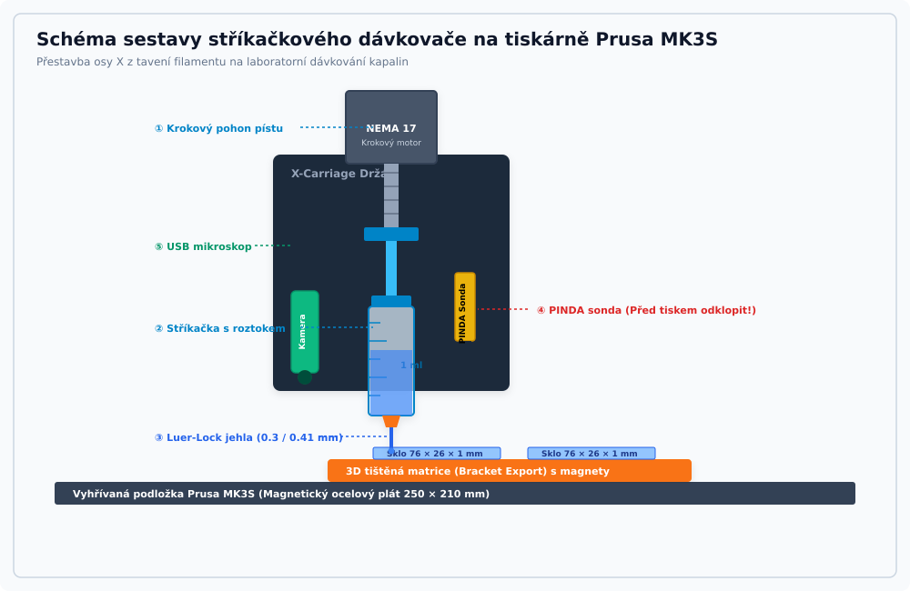
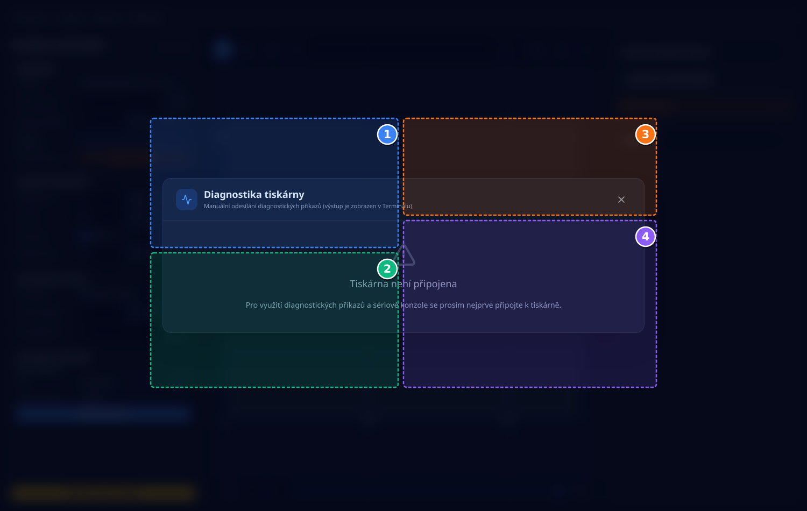
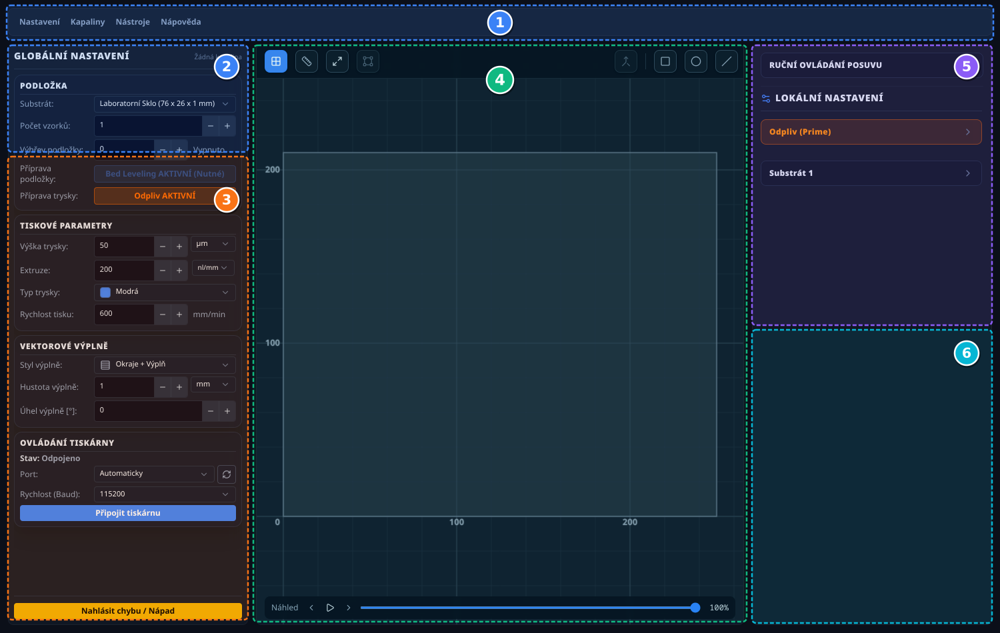
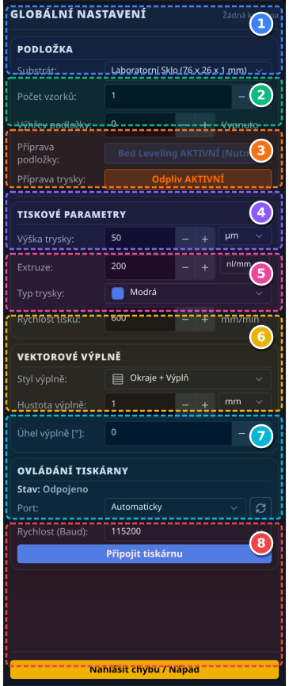
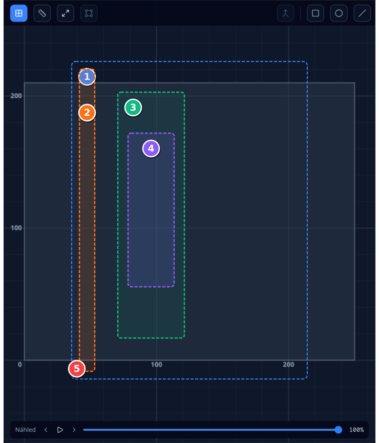
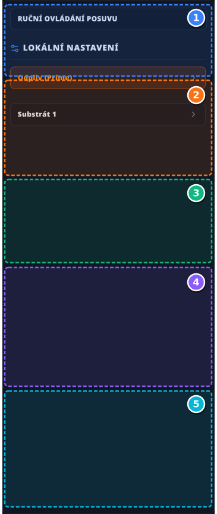
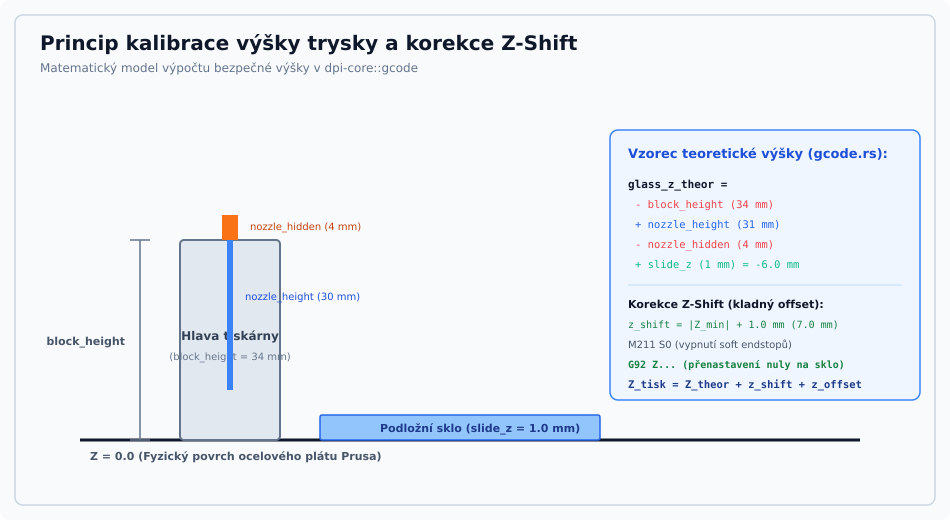
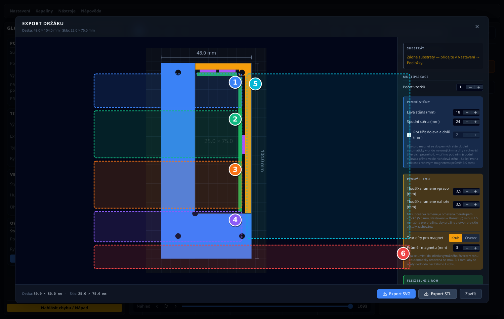

Droplet Printing Interface (DPI)
Uživatelský manuál a laboratorní příručka pro mikrodávkování roztoků na modifikovaných 3D tiskárnách
1. Úvod a bezpečnostní zásady obsluhy
1.1 Účel programu Droplet Printing Interface (DPI)
Droplet Printing Interface (DPI) je řídicí desktopová aplikace pro mikrodávkování roztoků a suspenzí na skleněné substráty pomocí modifikované 3D tiskárny (referenční model Prusa i3 MK3S).
Aplikace umožňuje obsluze:
- Připojit se k tiskárně přes USB a řídit její pohyby i dávkování.
- Načítat vektorové předlohy kapek a drah (SVG, DXF) nebo je přímo kreslit na plátně.
- Konfigurovat dávkovací parametry (Z-offset, rychlost pojezdu, dávkovaný objem v nl/mm či µl/mm).
- Provádět přesnou optickou kalibraci výšky jehly nad sklem pomocí USB mikroskopu.
- Řídit tisk na jedno nebo více podložních sklíček současně s možností individuálního nastavení pro každý vzorek.
1.2 Bezpečnostní zásady při obsluze tiskárny
Při práci s modifikovanou tiskárnou je nutné dbát zvýšené opatrnosti kvůli přítomnosti křehkých skleněných substrátů a ostrých dávkovacích jehel:
Skleněná podložní sklíčka a FTO substráty jsou křehké. Náraz kovové jehly nebo tiskové hlavy může způsobit roztříštění skla a poškození mechaniky tiskárny.
- Před každým spuštěním tisku vždy proveďte optickou kontrolu Z-kalibrace pomocí kamery.
- Ujistěte se, že sklíčka jsou správně a pevně usazena v držácích.
- V případě hrozící kolize okamžitě stiskněte červené tlačítko Nouzové zastavení (STOP) v levém panelu aplikace.
- Ostré jehly: Dávkovací jehly mají ostrý nebo zúžený kovový hrot. Při nasazování a manipulaci v pracovním prostoru dbejte opatrnosti, aby nedošlo k poranění.
- Pohybující se osy: Během tisku nezasahujte rukama do pracovního prostoru tiskárny. Pro manuální manipulaci s tiskovou hlavou vždy nejve uvolněte motory příkazem Uvolnit motory (M84) v diagnostickém okně.
2. Příprava a součásti modifikované tiskárny (Prusa MK3S)
Tato kapitola popisuje fyzické komponenty dávkovací soustavy, se kterými obsluha manipuluje při přípravě a provozu tiskárny.
2.1 Komponenty tiskové hlavy
Původní tisková hlava je vybavena stříkačkovým dávkovačem, kde posuv pístu zajišťuje krokový motor osy E:

Obrázek 2.1: Schéma tiskové hlavy s popisem klíčových prvků
| Bod | Ovládací prvek / Oblast | Funkce a laboratorní význam |
|---|---|---|
| 1 | Pohon pístu stříkačky | Krokový motor s lineárním šroubem, který tlačí přímo na píst upevněné stříkačky. |
| 2 | Tělo stříkačky (1 ml / 5 ml) | Laboratorní stříkačka (skleněná Hamilton nebo polypropylenová) sevřená v úchytu tiskové hlavy. |
| 3 | Dávkovací Luer-Lock jehla | Výměnná ocelová dávkovací jehla s barevnou paticí. |
| 4 | Indukční sonda PINDA | Senzor výšky pro referenční homing – měří výhradně ocelový plát mimo skleněné substráty. |
| 5 | USB mikroskopická kamera | Kamera zaměřená na hrot jehly pro optickou kalibraci Z-výšky a vizuální kontrolu kapek. |
2.2 Volba stříkaček a dávkovacích jehel
V nastavení DPI jsou předdefinovány profily nejčastěji používaných laboratorních jehel:
| Označení jehly | Délka (nozzle_height) |
Vnitřní průměr | Barevný kód | Typické laboratorní použití |
|---|---|---|---|---|
| Modrá jehla | 31.0 mm | 0.41 mm (Gauge 22) | Modrá | Viskóznější roztoky, polymery, širší linky |
| Červená jehla | 31.1 mm | 0.30 mm (Gauge 25) | Červená | Nízkoviskózní kapaliny, jemné kapky, vysoké rozlišení |
| Vlastní (Custom) | Dle měření | Dle měření | Volitelná | Jakákoliv speciální jehla nebo kapilára |
nozzle_hidden (výchozí 4.0 mm) představuje část patice zapuštěnou uvnitř upínacího bloku.2.3 Kalibrační faktor stříkačky (calibration_factor)
Aby program DPI správně převedl zadaný objem v mikrolitrech (µl) nebo nanolitrech (nl) na přesný posuv pístu stříkačky v milimetrech (osa E tiskárny), využívá kalibrační faktor v jednotkách .
| Typ stříkačky | Vnitřní průměr válce | Kalibrační faktor (k) |
|---|---|---|
| Hamilton 1 ml (skleněná mikrostříkačka) | 1.98 mm | 0.3239 mm/µl (výchozí hodnota) |
| Standardní 5 ml (plastová) | 9.50 mm | 0.0141 mm/µl |
Nastavení faktoru v programu:
- V horní liště otevřete Nastavení -> Tiskárna.
- Do pole Kalibrační faktor zadejte příslušnou hodnotu pro vaši stříkačku.
- Alternativně: Zadejte přímo vnitřní průměr válce stříkačky v milimetrech do pole Průměr stříkačky – program faktor dopočítá automaticky.
- Pro novou nestandardní stříkačku lze faktor snadno určit: změřte posuvným měřítkem délku stupnice v mm pro známý objem v µl a vydělte je ().
2.4 Pravidla pro obsluhu indukční sondy PINDA
Indukční sonda PINDA reaguje pouze na kovový ocelový plát. Skleněná podložní sklíčka jsou pro sondu neviditelná!
Jelikož sklíčko i držák vystupují nad úroveň plátu, nesmí sonda zůstat ve spodní pracovní poloze, jinak by při přejezdu narazila do držáku nebo skla.
Postup obsluhy:
- Homing: Tiskárna provede referenční sjezd osy Z (
G28 W) nad obnaženým ocelovým plátem v bezpečném rohu mimo držáky skel. - Výzva k uvolnění: Program automaticky pozastaví činnost a zobrazí výzvu na obrazovce: „Odstraňte PINDA sondu z podložky (tiskové hlavy), než bude zahájen tisk.“
- Vysunutí sondy: Obsluha imbusovým klíčem povolí aretační šroubek sondy PINDA na tiskové hlavě a vysune ji nahoru (nebo odklopí do servisní polohy), aby byl nejnižším bodem hlavy pouze hrot dávkovací jehly.
- Potvrzení: Teprve po mechanickém zajištění sondy v horní poloze klikněte na Pokračovat v aplikaci.
2.5 Ovládání USB mikroskopu v aplikaci
Pro sledování dávkování a přesnou optickou kalibraci výšky slouží video stream z USB mikroskopu v pravém panelu aplikace:
- Volba kamery: V rozbalovací nabídce vyberte připojený USB mikroskop.
- Orientace obrazu: Pomocí tlačítek můžete obraz otočit o 90°, 180° nebo 270° a horizontálně zrcadlit tak, aby směr na monitoru odpovídal skutečnému pohybu tiskárny.
- Snímek (Snapshot): Kliknutím na ikonu fotoaparátu uložíte aktuální snímek rozhraní jehla-substrát do souboru
.png. - Záznam videa: Tlačítko nahrávání umožňuje zaznamenat průběh dávkování kapek do formátu
.webm. - Plovoucí okno (Pop-out): Tlačítkem zvětšení otevřete video stream v samostatném okně, které lze umístit na druhý monitor pro nepřetržitý dohled nad tiskem.
3. Připojení a první spuštění
Tato kapitola vás provede spuštěním aplikace, navázáním obousměrné komunikace s tiskárnou Prusa MK3S a ověřením základních diagnostických funkcí.
3.1 Spuštění aplikace
DPI je dodáváno jako nativní binární balíček:
- Linux: Spusťte spustitelný soubor
dpinebo nainstalujte balíček.deb/.rpm/ AppImage. - Windows: Spusťte instalátor
DPI_Setup.exe, který vytvoří zástupce na ploše a v nabídce Start.
Pokud se po spuštění na Linuxu nezobrazují žádné sériové porty, ujistěte se, že váš uživatelský účet je členem skupiny dialout (Ubuntu/Debian) nebo uucp (Arch/Manjaro):
sudo usermod -a -G dialout $USER
Po přidání do skupiny je nutné se odhlásit a znovu přihlásit do systému.
3.2 Připojení k tiskárně (Sériová linka USB)
Tiskárna Prusa MK3S se k řídícímu počítači připojuje standardním kabelem USB typu B.
V levém horním rohu aplikace (Levý panel) se nachází sekce Připojení k tiskárně:
-
Výběr portu:
- Možnost "Automaticky" (doporučeno): Aplikace postupně projde všechny dostupné porty a odešle příkaz
M115. První port, který odpoví validním identifikačním řetězcem firmwaru Marlin, je automaticky připojen. - Manuální výběr: Vyberte konkrétní port z rozbalovacího seznamu (např.
/dev/ttyACM0na Linuxu neboCOM3na Windows).
- Možnost "Automaticky" (doporučeno): Aplikace postupně projde všechny dostupné porty a odešle příkaz
- Baudrate: Výchozí přenosová rychlost pro firmware Marlin na Prusa tiskárnách je 115200 Bd.
- Tlačítko Připojit: Klikněte na tlačítko se symbolem řetězu. Po úspěšném navázání spojení se ikona zbarví do zelena, tlačítko zobrazí "Odpojit" a v telemetrickém bloku pod ním se začnou živě aktualizovat souřadnice X, Y, Z a teploty.
3.3 Diagnostika tiskárny a ověření spojení
Před zahájením práce se doporučuje ověřit základní funkce tiskárny prostřednictvím okna Diagnostika tiskárny (dostupné z horního menu: Nástroje -> Diagnostika tiskárny nebo kliknutím na stavový řádek):

Obrázek 3.1: Diagnostické okno s rychlými příkazy a terminálem
| Bod | Ovládací prvek / Oblast | Funkce a laboratorní význam |
|---|---|---|
| 1 | Informace a stav (M115, M119, M114) | Ověření verze firmware (M115), kontrola stavu koncových spínačů (M119) a zjištění aktuální fyzické polohy (M114). |
| 2 | Pohyb a dávkování (G28, G92, M84) | Základní homing všech os (G28), rychlý homing bez měření sítě (G28 W), vynulování extruderu po výměně stříkačky (G92 E0) a uvolnění krokových motorů (M84). |
| 3 | Teplota a chlazení (M140, M106) | Okamžité a bezpečné vypnutí výhřevu podložky (M140 S0) a spuštění ofukového větráčku pro urychlení odparu rozpouštědla (M106 S255). |
| 4 | Interaktivní terminál G-kódu | Přímé odesílání vlastních G-kódových příkazů do tiskárny s okamžitým výpisem odpovědí firmware a historií příkazů. |
3.4 Uvítací obrazovka a vzdálený mobilní náhled (QR Kód)
Při prvním spuštění (nebo z horního menu Nápověda -> Vítejte v DPI) se otevírá uvítací centrum aplikace:
- Rychlý start a nedávné projekty: Umožňuje jedním kliknutím otevřít naposledy zpracovávané experimenty s přehledem data a času jejich uložení.
-
Mobilní laboratorní náhled (QR kód):
- DPI automaticky zjistí lokální IP adresu počítače v síti a vygeneruje unikátní QR kód.
- Naskenováním tohoto kódu fotoaparátem mobilního telefonu nebo tabletu připojeného na stejnou laboratorní Wi-Fi síť se otevře webové rozhraní aplikace (
http://<ip>:5173). - Webové rozhraní v reálném čase přebírá telemetrii z tiskárny (aktuální souřadnice, teploty podložky, stav dávkování), takže laborant může dohlížet na průběh experimentu z kteréhokoliv koutu laboratoře.
3.5 Kontrola a instalace aktualizací aplikace
DPI obsahuje integrovanou kontrolu aktualizací:
- Automatická kontrola: Krátce po spuštění aplikace automaticky ověří dostupnost novější verze. Pokud je nalezena nová verze, zobrazí se dialog s přehledem změn a možností instalace.
- Ruční kontrola: Aktualizaci můžete kdykoliv zkontrolovat v horním menu Nápověda -> Zkontrolovat aktualizace.
3.6 Odesílání laboratorní zpětné vazby (Feedback)
Přímo z aplikace lze komunikovat s vývojovým týmem:
- V horním menu zvolte Nápověda -> Odeslat zpětnou vazbu.
- Otevře se formulář, kam můžete popsat své postřehy, navrhnout novou funkci nebo nahlásit nestandardní chování. Zpráva je bezpečně uložena a přeposlána přes šifrovaný protokol vývojářům.
4. Podrobný průvodce uživatelským rozhraním
Uživatelské rozhraní DPI je navrženo s důrazem na přehlednost v laboratorním prostředí. Využívá třísloupcový layout s tmavou laboratorní estetikou šetřící zrak obsluhy.
4.1 Hlavní okno aplikace (Přehled)

Obrázek 4.1: Hlavní okno DPI s vyznačenými funkčními zónami
| Bod | Ovládací prvek / Oblast | Funkce a laboratorní význam |
|---|---|---|
| 1 | Hlavička aplikace (Header) | Hlavní menu Soubor (projekty, import, export CSV), výběr Kapaliny, menu Nástroje (Bracket Export, Diagnostika), Nastavení a nápověda. |
| 2 | Správa připojení tiskárny | Výběr sériového portu, baudrate, stav spojení a živá telemetrie tiskárny (aktuální souřadnice X/Y/Z a teplota podložky). |
| 3 | Procesní parametry a krájení (Slicing) | Volba typu podložního skla, konfigurace jehly/trysky, výška Z-offsetu, dávkovací rychlost (nl/mm), styl výplně a tlačítka spuštění tisku. |
| 4 | Centrální grafické plátno (Canvas2D) | Interaktivní vizualizace tiskové podložky Prusa MK3S (250 × 210 mm), rozložení sklíček, odplivové linky a aktuální polohy trysky. |
| 5 | Lokální přepisy sklíček (Slide Overrides) | Individuální nastavení Z-offsetu, dávkování, rychlosti nebo stylu výplně pro každé jednotlivé sklíčko zvlášť. |
| 6 | Ovládací panely (Kamera, Jog, Terminál) | Živý obraz z USB mikroskopu s možností rotace o 180°, manuální krokovací klávesnice (Jog) a vestavěný terminál. |
4.2 Levý panel: Procesní a tiskové parametry
Levý panel je řídícím centrem pro přípravu tiskové úlohy a její odeslání do tiskárny.

Obrázek 4.2: Detail ovládacích prvků levého panelu
| Bod | Ovládací prvek / Oblast | Funkce a laboratorní význam |
|---|---|---|
| 1 | Sériový port a připojení | Výběr portu tiskárny a tlačítko Připojit/Odpojit. Po připojení indikuje stav zelenou barvou. |
| 2 | Telemetrie pozice a teplot | Živý odečet souřadnic X, Y, Z a teploty vyhřívané podložky Prusa v reálném čase. |
| 3 | Volba podložního skla | Výběr geometrie substrátu: Laboratorní sklo (76 × 26 × 1 mm), FTO (76 × 50 × 1 mm) nebo Vlastní rozměr. |
| 4 | Konfigurace dávkovací trysky | Presety jehel: Modrá (0.41 mm), Červená (0.30 mm) nebo Vlastní s automatickým načtením výšky a zapuštění. |
| 5 | Z-Offset a volba jednotek | Klíčový parametr výšky dávkování nad sklem. Možnost přepínání mezi mikrometry (µm) a milimetry (mm). |
| 6 | Rychlost tisku a extruze | Rychlost pojezdu osy X/Y v mm/min a dávkovací rychlost s volbou jednotek (nl/mm, µl/mm nebo kroky/mm). |
| 7 | Styl výplně a šrafování | Možnost volby: Pouze obrysy, Pouze výplň, nebo Okraje + Výplň. Nastavení hustoty rozestupů a úhlu natočení šrafů. |
| 8 | Tlačítka řízení tisku | Zelené tlačítko Spustit tisk, žluté Pozastavit a červené Nouzové zastavení (STOP) s automatickým odjezdem hlavy. |
4.3 Centrální plátno (Canvas2D)
Plátno věrně simuluje pracovní prostor tiskárny Prusa MK3S:

Obrázek 4.3: Vizualizace tiskové podložky a rozložení substrátů na plátně
| Bod | Ovládací prvek / Oblast | Funkce a laboratorní význam |
|---|---|---|
| 1 | Ohraničení podložky (Bed Limits) | Modrý obdélník reprezentující fyzické rozměry ocelového plátu Prusa MK3S (výchozí 250 × 210 mm). |
| 2 | Odplivová dráha (Prime Line) | Svislá linie na levém okraji podložky. Zde tiskárna před tiskem vytlačí definovaný objem kapaliny pro ustavení menisku. |
| 3 | Matrice podložních sklíček | Automaticky vypočtená mřížka skel uspořádaná do sloupců a řad s respektováním nastavených rozestupů (multi_spacing). |
| 4 | Vektorový vzor kapek | Vizuální náhled drah kapek. Čárkované čáry znázorňují rychlopřejezdy bez dávkování, plné čáry aktivní extruzi. |
| 5 | Počátek souřadnic [0, 0] | Levý přední roh podložky (Home pozice os X a Y). |
Horní nástrojová lišta plátna (Canvas Toolbar)
V záhlaví plátna se nachází rychlá nástrojová lišta s interaktivními funkcemi:
- Zobrazení mřížky (Grid): Zapne nebo vypne souřadnou mřížku tiskové podložky.
- Pravítko (Měření vzdáleností): Aktivuje interaktivní měřicí režim. Kliknutím na dva libovolné body na plátně se zobrazí přesná vzdálenost v milimetrech včetně složek a .
- Vycentrovat (Fit View): Vycentruje celou tiskovou desku do okna plátna.
- Na sklíčko (Center on Slide): Přiblíží a vycentruje pohled na konkrétní vybrané podložní sklíčko.
- Sloučit uzly (Merge Nodes): Otevře vyskakovací okno pro vyhlazení a svaření rozpojených vektorových drah.
- Kreslicí nástroje (Obdélník, Elipsa, Úsečka): Umožňují nakreslit geometrické tvary přímo na sklíčko bez nutnosti otevírat externí grafický editor.
Kontextová nabídka a ovládání objektů na plátně
Kliknutím pravým tlačítkem myši na libovolný objekt se zobrazí kontextové menu:
- Vycentrovat: Posune objekt přesně na geometrický střed daného sklíčka.
- Resetovat: Vrátí objekt do výchozího měřítka, natočení a pozice.
- Otočit o 90°: Rychlá rotace po směru hodinových ručiček.
- Zrcadlit (Vodorovně / Svisle): Horizontální a vertikální překlopení trajektorie.
- Aplikovat na všechna skla: Replikuje aktuální polohu, měřítko a rotaci vybraného objektu na všechny ostatní vzorky v tiskové dávce.
- Skrýt z tohoto skla (Delete / Backspace): Vratně deaktivuje objekt pouze na konkrétním sklíčku.
Mikropozicování z klávesnice a režimy transformace
Pro přesné laboratorní usazení nabízí plátno pokročilé interakce:
- Dvojklik na vybraný objekt: Přepíná interaktivní transformační režim mezi Scale (úchopové čtverečky v rozích pro změnu velikosti) a Rotate (kruhové úchopy pro plynulé otáčení).
-
Modifikátory myši při transformaci:
- Přidržením klávesy Alt: Synchronizovaný pohyb – tažení vybraného objektu na jednom sklíčku současně posune tentýž objekt na všech ostatních substrátech o stejný relativní vektor.
- Přidržením klávesy Ctrl: Kvantování transformace – rotace skáče přesně po 15°, měřítko po krocích 0.1 a poloha se přichytává k mřížce.
- Přidržením klávesy Shift: Kotva ve středu geometrie (škálování symetricky vůči těžišti namísto protilehlého rohu).
-
Posun z klávesnice:
- Samotné šipky ← → ↑ ↓: Krok 1.0 mm.
- Se stisknutou klávesou Shift: Jemný laboratorní posuv 0.1 mm (100 µm).
4.4 Pravý panel: Slide Overrides a přímé ovládání
Pravý panel nabízí pokročilé laboratorní funkce a přímou správu jednotlivých vzorků:

Obrázek 4.4: Pravý panel s lokálními přepisy sklíček, kamerou a Jog ovládáním
| Bod | Ovládací prvek / Oblast | Funkce a laboratorní význam |
|---|---|---|
| 1 | Accordion sklíček (Vzorky) | Rozbalovací karty pro jednotlivé vzorky (Sample 1, Sample 2…). Umožňuje nezávislou konfiguraci každého skla v jedné tiskové dávce. |
| 2 | Lokální přepis parametrů (Overrides) | Aktivace lokálního Z-offsetu, jiné dávkovací rychlosti (nl/mm) nebo hustoty výplně pro daný vzorek (např. gradientní experimenty). |
| 3 | Správa objektů a viditelnosti | Seznam vektorových tvarů na substrátu s možností dočasného skrytí oka nebo přiřazení jiné trysce. |
| 4 | Živý obraz z mikroskopu | Video stream z USB mikroskopu s tlačítky pro otočení o 180° a zrcadlení horizontální osy. |
| 5 | Krokovací klávesnice (Jog) | Manuální pojezd v osách X, Y a Z s volbou kroku (0.1 mm, 1 mm, 10 mm, 50 mm) a tlačítkem Home (G28). |
Detailní parametry lokálního přepisu (Slide Overrides)
V rozbalovací kartě každého vzorku lze přepsat globální procesní hodnoty:
- Uživatelský název a poznámka: Vložení popisku vzorku (např. „Vzorek B2 – 20 mM koncentrace“), který se promítne do exportovaného laboratorního protokolu (CSV).
- Lokální Z-Offset: Umožňuje nastavit odlišnou tiskovou výšku (v µm nebo mm) pro každé sklo zvlášť, což je ideální pro testování smáčivosti a stability menisku v gradientních řadách.
- Dávkování a rychlost: Přepis extruze (
nl/mm,µl/mmnebo kroky/mm) a pojezdové rychlosti (mm/min). - Přepis výplně: Volba vlastního rozestupu šrafování (
mm,%nebo celkový počet drah) a stylu výplně (Pouze obrysy, Výplň, Obrysy + Výplň). - Správa objektů na substrátu: Zobrazení fyzických rozměrů objektu v milimetrech, přepínání viditelnosti a přiřazení specifické jehly s okamžitým barevným odlišením dráhy.
Manuální ovládání tiskárny (Jog Widget)
Spodní část pravého panelu obsahuje přímé řízení pohonů tiskárny, které je aktivní pouze tehdy, když je stroj připojen a právě netiskne:
- Krokový přírůstek: Volba vzdálenosti jednoho pojezdu:
0.1 mm(jemné dostavení),1.0 mm,10.0 mma50.0 mm(rychlé přejíždění). -
Nezávislé parkování os:
- Home XY (
G28 X Y): Zaparkuje podložku a hlavu bez pohybu svislé osy Z. - Home Z (
G28 Z): Samostatný referenční sjezd osy Z na ocelovém plátu. - Kalibrace sítě podložky (
G80): Spustí automatické měření nerovností podložky firmwarem Marlin.
- Home XY (
- Příkazová řádka G-kódu: Vstupní pole pro okamžité odeslání jakéhokoliv manuálního Marlin příkazu přímo do základní desky Einsy.
Bezpečnostní systém tiskových výzev a dialogů
Během přípravy a tisku mohou nastat situace vyžadující zásah obsluhy (pauza tisku, výzva k uvolnění sondy PINDA, výměna jehly či potvrzení operace). Aplikace obsahuje bezpečnostní pojistky:
- Fronta výzev: Pokud nastane více událostí za sebou, dialogy se zobrazují postupně. Žádná výzva se nepřeskočí.
- Ochrana proti nechtěnému kliknutí: Po otevření dialogového okna je potvrzovací tlačítko na zlomek sekundy (400 ms) neaktivní. Tím je zabráněno nechtěnému potvrzení kroku překliknutím z předchozí práce.
4.5 Konfigurace aplikace a expertní režim (Settings Modal)
Do hlavního okna konfigurace vstoupíte kliknutím na Nastavení v horní liště. Konfigurační okno je rozděleno do tematických záložek:
- Tryska: Správa profilů dávkovacích jehel (délka, vnitřní průměr, zapuštěná část, barva).
- Skla: Knihovna rozměrů substrátů (šířka, výška, tloušťka v ose Z).
- Kapaliny: Chemické profily roztoků (procesní Z-offsety, rychlosti extruze, povolené trysky a teploty).
- Tiskárna: Fyzické limity podložky, kalibrační faktor stříkačky, výška bloku hlavy a přechod do konfigurace Nivelace podložky.
- Tisk: Globální strategie pojezdu (
route_mode: nejrychlejší vs.no_cross) a priorita tisku (substrate_majorvs.nozzle_major). - Program: Přepínání tmavého a světlého motivu, sezónní animace a aktivace Expertního režimu.
Expertní režim a editace G-kódů
Expertní režim je zabezpečený mód určený pro servisní techniky a vývojáře procesů:
- Aktivace: V záložce Program přepněte přepínač Aktivovat expertní režim a potvrďte bezpečnostní varování.
- Záložka G-kódy: Po aktivaci se v levém menu nastavení zpřístupní nová záložka G-kódy, kde lze přímo editovat šablony
start_gcode,end_gcode,loop_start_gcode,loop_end_gcodea makro výměny tryskynozzle_change_gcode. - Trvalé ukládání (Persistence): Veškeré úpravy G-kódů se po stisku Uložit zapisují trvale do konfiguračního souboru
settings.json. Změny zůstávají v platnosti napořád, i po vypnutí expertního režimu či restartu aplikace. - Bezpečnostní zámek: Samotný přepínač expertního režimu se po ukončení aplikace z bezpečnostních důvodů automaticky vrací do vypnutého stavu, aby běžný uživatel nemohl omylem poškodit strojní makra.
Chování funkce „Obnovit výchozí“
V levém dolním rohu okna nastavení se nachází tlačítko Obnovit výchozí:
- Je-li expertní režim ZAPNUTÝ: Obnoví se kompletní tovární nastavení tiskárny včetně výchozích Marlin šablon G-kódů.
- Je-li expertní režim VYPNUTÝ: Obnoví se pouze běžné fyzické limity tiskárny, rychlosti a body nivelace. Uživatelsky přizpůsobené G-kódy v expertní sekci zůstanou zcela nedotčeny!
5. Příprava tiskové úlohy a procesní parametry
Příprava tiskového experimentu v DPI probíhá zcela digitálně prostřednictvím importu standardní vektorové grafiky a konfigurace chemicko-fyzikálních vlastností použitého roztoku.
5.1 Import vektorové předlohy (SVG a DXF)
DPI podporuje dva průmyslové a vědecké formáty vektorové grafiky:
- SVG (Scalable Vector Graphics): Standardní otevřený formát exportovatelný z grafických editorů jako je Inkscape, Adobe Illustrator, CorelDRAW či Python knihoven (např.
matplotlib). DPI podporuje úsečky, lomené čáry, obdélníky, kružnice, elipsy a kubické i kvadratické Bézierovy křivky. - DXF (Drawing Exchange Format): Standardní CAD formát používaný v AutoCADu, FreeCADu či SolidWorks pro přesné mikrofluidní kanálky a čipy.
Postup importu
- V horní nabídce klikněte na Soubor -> Načíst vzorek nebo stiskněte Ctrl + O.
- Vyberte soubor
.svgnebo.dxf. Program automaticky načte a zpracuje křivky do tiskových trajektorií. - Přidání dalšího objektu: Pokud chcete na stejné substráty přidat další nezávislý vzor (např. druhou vrstvu pro tisk s jinou jehlou nebo roztokem), zvolte Soubor -> Přidat objekt (Ctrl + Shift + O).
mm) v měřítku 1:1 k reálnému podložnímu sklíčku. Všechny texty a speciální objekty před exportem převeďte na křivky (Křivka -> Objekt na křivku).5.2 Automatické škálování a bezpečnostní okraje
Při načtení grafiky DPI automaticky provádí analýzu rozměrů:
- Pokud vzor přesahuje fyzické rozměry zvoleného sklíčka (např. 76 × 26 mm), aplikace automaticky nabídne proporční zmenšení.
- Hlídání okrajů skla: Tryska má určitý vnější průměr. DPI automaticky hlídá, aby žádná část kapky ani kovové patice jehly nezasáhla okraj sklíčka. Při změně průměru jehly na větší velikost aplikace upozorní na nutnost přizpůsobení geometrie.
5.3 Multiplikace vzorků a mřížka podložky
V laboratorní praxi je nutné zpracovávat desítky identických nebo mírně modifikovaných vzorků najednou. V poli Počet vzorků (Sample count) v levém panelu můžete zvolit libovolný počet sklíček:
-
DPI automaticky spočítá maximální kapacitu podložky Prusa MK3S na základě:
- Fyzických rozměrů podložky (250 × 210 mm).
- Počátečních odsazení od okrajů (
start_offset_x = 18 mm,start_offset_y = 11 mm). - Bezpečnostních mezer mezi sousedními sklíčky (
multi_spacing = 5 mm).
- Sklíčka jsou řazena do sloupců od levého okraje směrem doprava. Každé sklíčko v plátně obdrží své identifikační číslo vzorku.
5.4 Význam a konfigurace úvodního odplivu (Prime Feature)
Před zahájením samotného tisku mikrokapek na čistá sklíčka je kriticky nutné provést tzv. Odpliv (Prime):
- Zasychání menisku: Na hrotu jehly dochází během přípravy k částečnému odpaření rozpouštědla, což vede ke zahuštění kapaliny a vytvoření tuhé kapilární zátky.
- Vzduchová kapsa: Po nasazení nové jehly je vnitřní kanálek vyplněn vzduchem. Bez odplivu by prvních několik milimetrů dráhy netisklo vůbec nic.
- Ustavení hydrodynamického tlaku: Pružnost pístu a stlačitelnost mikrobublin vyžaduje natlakování soustavy.
V levém panelu zaškrtněte volbu Aktivovat odpliv (Prime):
- Tiskárna před najetím nad první sklíčko sjede na bezpečnou zónu při levém okraji podložky (mimo skla) a vytlačí úzkou souvislou čistící linku o délce cca 30 mm.
- Teprve po ustavení stabilního kapkového menisku provede tisková hlava přejezd (Z-hop) na první sklíčko.
5.5 Výběr a správa kapalin (Liquid Profiles)
Různá rozpouštědla a suspenze mají odlišnou viskozitu, povrchové napětí a smáčivost. V horní liště aplikace naleznete menu Kapaliny:
| Kapalina | Doporučený Z-offset | Max. rychlost | Specifika chování při dávkování |
|---|---|---|---|
| Voda / Pufry | 0.15–0.25 mm | 1200 mm/min | Vysoké povrchové napětí, tvoří vyšší zaoblené kapky, nízká smáčivost |
| Ethanol / IPA | 0.08–0.15 mm | 800 mm/min | Extrémní smáčivost, rychlý samovolný rozliv po skle, rychlý odpar |
| DMSO / DMF | 0.20–0.30 mm | 1500 mm/min | Vysoká viskozita, pomalý odpar, nutný pomalejší náběh tlaku |
| Polymerní roztok (PEDOT:PSS) | 0.10–0.20 mm | 600 mm/min | Náchylnost k tvorbě vláken (stringing), nutná delší prodleva |
Profil kapaliny umožňuje v konfiguračním okně (Nastavení -> Kapaliny) nastavit přísné laboratorní mantinely (Guard Limits), které brání chybě lidského faktoru při přípravě tisku:
- Kategorie kapalin: Chemické roztoky lze organizovat do skupin (např. Prekurzory solárních článků, Biologické pufry, Vodivé polymery). V rozbalovacích nabídkách se profily přehledně seskupují.
- Bezpečnostní rozsah Z-offsetu (
z_offset_min/z_offset_max): Pokud laborant v panelu zadá hodnotu mimo tento interval, aplikace vstup odmítne. Tím je fyzicky vyloučeno poškrábání skla jehlou při nechtěném překlepu. - Limity dávkovací rychlosti a pojezdu: Nastavení povoleného intervalu extruze (
extrusion_min/max) a pojezdové rychlosti (print_speed_min/max). - Teplotní okno podložky (
bed_temp_min/max): Stanovuje povolený rozsah temperování substrátu pro dané rozpouštědlo. - Zakázané trysky (
forbidden_nozzles): Přetažením myší lze pro konkrétní kapalinu zakázat nevhodné jehly (např. pro suspenzi s nanočásticemi zakázat jehlu s malým průměrem 0.30 mm kvůli vysokému riziku zanesení). Pokud je zakázaná tryska vybrána, aplikace obsluhu ihned vizuálně varuje. - Barevné kódování: Každému roztoku je přiřazen specifický barevný odstín usnadňující orientaci v multi-materiálových projektech.
5.6 Styly výplně (Infill Styles)
Pro uzavřené tvary (polygony, kružnice, obdélníky) nabízí DPI tři tiskové režimy:
- Pouze obrysy (Contour only): Jehla vykreslí pouze vnější obvodové křivky. Ideální pro mikrofluidní stěny a oddělovací hráze.
- Pouze výplň (Infill only): Plocha je vyplněna paralelními tahy s nastaveným rozestupem (např. 1.0 mm) pod zadaným úhlem (výchozí 0°, volitelně 45° či 90°).
- Okraje + Výplň (Contour + Infill): Nejprve je vykreslen přesný obrys, který zabrání nežádoucímu přetékání kapalin, a následně je vnitřek vyplněn rastrem.
5.7 Svařování uzlů a čištění drah (Merge Nodes)
Při importu z CAD programů nebo vektorových editorů se stává, že křivky nejsou exportovány jako souvislé lomené čáry (polylines), nýbrž jako stovky drobných rozpojených úseček. Bez optimalizace by tiskárna na každém uzlu zvedala jehlu (Z-hop), což způsobuje nežádoucí kapání a trhání tekuté stopy.
DPI obsahuje integrovaný nástroj Sloučit uzly (Merge Nodes):
- V nástrojové liště plátna klikněte na ikonu spojení uzlů.
- Zadejte toleranci vzdálenosti v milimetrech (např.
0.05 mmnebo0.10 mm). - Aplikace vyhledá sousedící koncové body v rámci zadaného poloměru a spojí je do jediné plynulé křivky. Tím se dramaticky sníží počet nutných přejezdů a zrychlí tisk.
5.8 Víceobjektový tisk a přiřazení trysek k objektům
Pokud tiskový experiment vyžaduje nanesení více různých činidel na jedno sklíčko (např. nanesení elektrodového materiálu a následně biologického senzoru):
- Přidejte do projektu další vektorový objekt přes Soubor -> Přidat objekt.
- V pravém panelu v sekci Objekty rozklikněte požadovaný objekt a v rozbalovací nabídce Tryska mu přiřaďte konkrétní jehlu (např. Objekt 1 = Červená 0.3 mm, Objekt 2 = Modrá 0.41 mm).
- Tiskárna vytiskne všechny geometrie první trysky, poté vyvolá pauzu pro výměnu jehly a stříkačky, obsluha nasadí novou jehlu se stříkačkou a po potvrzení tiskárna provede homing a pokračuje druhým objektem.
5.9 Řízení teploty podložky a prahová hodnota (bed_min_temp)
Některé laboratorní procesy (např. krystalizace solí či rychlé odpaření rozpouštědla) vyžadují temperování podložních skel:
- V profilu kapaliny nebo v nastavení tisku lze zadat cílovou teplotu vyhřívané podložky (
bed_temp). - Prahová hodnota (šedá zóna 30 °C): DPI implementuje bezpečnostní prahové pravidlo
bed_min_temp(výchozí 30.0 °C). Pokud je požadovaná teplota nastavena na hodnotu menší než 30 °C (např. 0 °C nebo 25 °C), vyhřívání se považuje za neaktivní a do G-kódu se negenerují žádné příkazy pro čekání na teplotu (M190/M140). - Je-li teplota nastavena na , tiskárna před zahájením tisku zapne vyhřívání a počká na dosažení stabilní teploty sklíček.
5.10 Přímé kreslení geometrických tvarů na plátně
Kromě importu externích SVG a DXF souborů umožňuje DPI navrhovat základní tvary přímo v aplikaci bez nutnosti otevírat CAD software:
-
Výběr nástroje: V pravé části horní lišty plátna klikněte na ikonu:
- Obdélník (Square): Pro ohraničené obdélníkové zóny či plošná pole.
- Elipsa (Circle): Pro kruhová terčíková pole a kapilární rezervoáry.
- Čára (Line): Pro rovné dělící linie či odplivové stopy.
- Kreslení tažením myši: Klikněte na plochu vybraného sklíčka a tažením myši definujte rozměry.
-
Klávesové modifikátory během kreslení:
- Ctrl: Aktivuje magnetické přichytávání k souřadné mřížce (Grid Snap).
- Alt: Kreslí tvar symetricky od středu (namísto od rohu).
- Shift: Zamkne poměr stran na 1:1 (vytvoří dokonalý čtverec či kružnici) nebo u úsečky zaokrouhlí úhel po 45°.
- Escape: Okamžitě zruší rozkreslený tvar nebo opustí kreslicí režim.
- Automatická integrace: Nakreslený tvar je okamžitě přidán do seznamu objektů jako samostatná plnohodnotná vektorová stopa, pro kterou lze volit styl výplně, rychlost extruze i přiřazenou jehlu.
6. Kalibrace, Z-Shift a tiskový proces
Přesnost v ose Z je u dávkování kapalin naprosto kritická. Odchylka pouhých 50 mikrometrů může způsobit buď rozstříknutí kapky a nechtěné rozlití do stran, nebo naopak to, že kapka neukápne z jehly a zůstane viset na hrotu vlivem povrchového napětí.
6.1 Princip výškového nastavení (Z-Shift)
Dávkovací jehla upevněná ve stříkačkovém držáku sahá níže než původní tryska tiskárny a skleněný substrát má určitou tloušťku.

Obrázek 6.1: Vzájemná geometrie tiskové hlavy, jehly a povrchu skla
Aplikace DPI automaticky provádí přepočet souřadnic (tzv. Z-Shift), aby se tiskárna mohla bezpečně pohybovat nad sklem bez kolizí a bez blokování koncovými spínači. Skutečná tisková výška je pak dána součtem zkalibrované polohy povrchu skla a procesního Z-offsetu (např. 180 µm nad sklem pro stabilní meniskus kapky).
Obsluha nemusí provádět žádné ruční výpočty – veškeré přesné doladění probíhá interaktivně v kalibračním okně pomocí kamery.
6.2 Interaktivní optická kalibrace (Z-Calibration Modal)
Před spuštěním první tiskové úlohy (nebo po každé fyzické výměně jehly/stříkačky) se automaticky otevírá okno Přesná kalibrace skla (Z-Shift):
- Tiskárna automaticky provede homing (
G28 W) a najede hrotem jehly nad bezpečný referenční roh prvního podložního sklíčka do bezpečné výšky. - V okně kalibrace se zobrazí živý video stream z USB mikroskopu namířeného na rozhraní jehla-sklo.
-
Jemný posuv:
- Zvolte krok posunu:
0.5 mm,0.1 mm,0.05 mmnebo ultra-jemný0.01 mm(10 µm). - Pomocí tlačítek na obrazovce nebo kláves ↑ / ↓ sjíždějte jehlou dolů.
- Na obrazovce mikroskopu sledujte dotyk hrotu jehly (nebo jeho odrazu na lesklém povrchu skla). V momentě, kdy se hrot jehly právě dotkne povrchu skla, je dosaženo nulové relativní výšky.
- Zvolte krok posunu:
- Klikněte na zelené tlačítko Potvrdit a spustit tisk. Vypočtená hodnota korekce
z_shiftse uloží do paměti a aplikuje na celou tiskovou úlohu.
default_z_hop (výchozí 2.0 mm) a při přejezdu celé podložky na bezpečnou výšku safe_z (20.0 mm), aby nedošlo k poškrábání vzorků.6.3 Nivelace podložky (Bed Leveling) a testovací jízda bodů
Pokud má vyhřívaná podložka tiskárny drobné mechanické nerovnosti, lze v konfiguraci aktivovat automatickou nivelaci sítě:
- V záložce Nastavení -> Nivelace je definována síť bodů (výchozí matice 3 × 3 = 9 bodů).
- Všechny tyto body musí ležet na obnaženém ocelovém plátu mimo prostor držáků sklíček. V náhledu je každý bod znázorněn kruhovým terčíkem o nastavitelném průměru
leveling_circle_diameter(výchozí 8.0 mm). - Optimalizace přejezdů: Body jsou automaticky seřazeny meandrovitě (střídavě zleva doprava a zprava doleva), aby byl přejezd hlavy co nejrychlejší a nejplynulejší.
Interaktivní ověření bodů na tiskárně (Test bodů)
Pro naprostou laboratorní jistotu, že sonda PINDA při nivelaci nezasáhne sklo, obsahuje DPI interaktivní testovací režim:
- V záložce Nivelace klikněte na tlačítko Otestovat body na tiskárně.
- Aplikace zobrazí bezpečnostní upozornění a po potvrzení se automaticky připojí k tiskárně.
- Tiskárna provede rychlý homing (
G28 W) a následně postupně najíždí sondou nad jednotlivé definované body (G0 X... Y... F3000). - Laborant vizuálně zkontroluje, že se hrot sondy nachází bezpečně nad ocelovým plechem s dostatečnou vzdáleností od hrany plastového držáku skla.
- Pokud je bod příliš blízko držáku, lze jeho souřadnice přímo v okně testu okamžitě jemně posunout a přeměřit.
6.4 Průběh tisku a správa plánovaných pauz (Print Pause)
Po spuštění tisku DPI zobrazuje:
- Průběžný ukazatel v procentech a zbývající čas v minutách a sekundách.
- Animovanou aktuální polohu trysky přímo na plátně.
Obsluha plánovaných pauz (M0 / M1 / M601)
Pokud tisková úloha obsahuje více vrstev, vyžaduje výměnu činidla nebo jehly:
- Tiskárna dokončí stávající segment, zvedne trysku na bezpečnou výšku a zaparkuje na kraji podložky.
- Na obrazovce se otevře modální okno Pauza tisku (Požadavek obsluhy) s popisem kroku.
- Obsluha provede potřebný laboratorní úkon (např. nasazení nové stříkačky s dalším činidlem).
- Kliknutím na Pokračovat v tisku tiskárna automaticky provede příkaz definovaný v
nozzle_change_gcode(výchozí bezpečný homingG28) a plynule naváže přesně v místě přerušení.
6.5 Export laboratorního protokolu (CSV)
Pro potřeby vědecké archivace a laboratorních deníků umožňuje DPI vygenerovat detailní strukturovaný CSV protokol:
- V horním menu zvolte Soubor -> Uložit protokol (CSV).
- Protokol obsahuje: datum a čas experimentu, verzi DPI, typ použitého skla a trysek, celkovou ujetou vzdálenost, tiskový čas a přehlednou tabulku všech vzorků včetně jejich individuálních Z-offsetů a dávkovacích objemů.
7. Výroba příslušenství: Modul Bracket Export (Držáky sklíček)
Při rychlých pohybech tiskové podložky v ose Y (až 3000 mm/min) by volně položená sklíčka okamžitě sklouzla. DPI proto obsahuje unikátní vestavěný generátor laboratorních montážních matric – modul Bracket Export.
7.1 Princip magnetických pružných držáků
Držák generovaný v DPI zajišťuje spolehlivé usazení skla:
- Pevné L-rameno: Tvoří pevnou referenční zarážku pro dva kolmé okraje sklíčka.
- Flexibilní meandrové pružiny: Pružná ramena z tištěného plastu jemně, ale pevně dotlačují sklíčko do referenčního rohu, čímž kompenzují výrobní tolerance řezaných skel (obvykle ).
- Neodymové magnety: Vespod držáku jsou kapsy pro malé neodymové magnety (např. válečky ), které celou matrici pevně přichytí k pružnému ocelovému plátu Prusa MK3S bez nutnosti šroubování.

Obrázek 7.1: Okno modulu Bracket Export pro návrh a generování držáků
| Bod | Ovládací prvek / Oblast | Funkce a laboratorní význam |
|---|---|---|
| 1 | Volba rozměrů substrátu | Výběr geometrie skla. Automaticky načte délku, šířku a nominální tloušťku skla (např. 1.0 mm). |
| 2 | Parametry pevných stěn | Nastavení tloušťky základních stěn L-profilu a možnost rozšíření okrajů pro stabilní dosednutí na podložku. |
| 3 | Geometrie pružinových meandrů | Počet ohybů pružiny, šířka prvku a kompenzace mezer pro tiskové tolerance. |
| 4 | Otvory pro neodymové magnety | Volba tvaru (kruhové vrtání vs. čtvercová kapsa) a průměru otvorů pro vlisování magnetů (výchozí 3.0 mm). |
| 5 | Interaktivní 2D náhled | Okamžitá vizualizace generované geometrie držáku, pružin a magnetických kapes v reálném čase. |
| 6 | Tlačítka exportu (STL a SVG) | Přímý export do 3D modelu .stl pro tisk na 3D tiskárně nebo do vektorového .svg pro laserové vyřezání. |
7.2 Klíčová konstrukční pravidla pro 3D tisk držáku
Při generování držáku je nutné respektovat pravidla navržená v DPI:
glassThickness, obvykle 1.0 mm). Pokud by plastový rámeček přečníval nad horní rovinu sklíčka, hrozilo by, že dávkovací jehla při nízkém Z-offsetu (např. 150 µm) narazí do plastové hrany držáku.Doporučené tiskové parametry pro výrobu držáku na Prusa MK3S:
- Materiál: PETG nebo ASA (vynikající pružnost meandrů a vysoká chemická odolnost vůči kapkám rozpouštědel; PLA je příliš křehké).
- Výška vrstvy: 0.15 mm nebo 0.20 mm.
- Výplň: 100 % (plný perimetr pro maximální tuhost stěn).
- Magnety: Neodymové magnety vtlačte do otvorů na spodní straně matrice. Pro jistotu je lze zajistit kapkou vteřinového lepidla.
8. Praktický průvodce experimentem krok za krokem
Tato kapitola slouží jako rychlý standardní operační postup (SOP) pro laboranta, který provádí tiskovou dávku od prázdné tiskárny až po hotový vzorek a vygenerovaný protokol.
Krok 1: Příprava roztoku a naplnění stříkačky
- Připravte požadovaný roztok (např. 1 ml suspenze perovskitového prekurzoru).
- Natáhněte roztok do stříkačky (ideálně přes tenkou kanylu nebo filtr).
-
Kritický krok – Odstranění mikrobublin:
- Otočte stříkačku hrotem vzhůru a lehkým poklepáváním vytlačte veškerý vzduch.
- Jakákoliv vzduchová bublina uvnitř válce stříkačky působí jako pružina a způsobí nekontrolované odkapávání kapaliny i po zastavení motoru!
- Našroubujte zvolenou Luer-Lock dávkovací jehlu (např. modrou 0.41 mm).
- Vložte stříkačku do držáku na ose X tiskárny a dotáhněte aretační šrouby. Přitlačte píst k jezdci lineárního šroubu.
Krok 2: Příprava tiskové podložky a substrátů
- Očistěte pružný ocelový plát tiskárny Prusa MK3S isopropanolem (IPA).
- Položte na ocelový plát 3D tištěný držák (matrici). Neodymové magnety držák okamžitě pevně zafixují.
- Vložte čistá laboratorní podložní sklíčka (76 × 26 mm) do matrice. Ujistěte se, že meandrové pružiny skla pevně domáčkly do referenčního rohu.
Krok 3: Spuštění DPI a připojení tiskárny
- Zapněte tiskárnu hlavním vypínačem a propojte ji USB kabelem s počítačem.
- Spusťte aplikaci DPI.
- V levém panelu zkontrolujte nastavení portu ("Automaticky" nebo
/dev/ttyACM0/COM3) a klikněte na tlačítko Připojit. - Jakmile se rozsvítí zelený indikátor a načtou souřadnice, otevřete horní menu Nástroje -> Diagnostika tiskárny a klikněte na Najetí domů (Bez kalibrace podložky) [G28 W]. Tiskárna bezpečně zkalibruje koncové spínače.
Krok 4: Načtení vzoru a konfigurace parametrů
- Klikněte na Soubor -> Načíst vzorek (Ctrl + O) a vyberte připravený soubor SVG.
- Zkontrolujte na plátně rozložení sklíček. Nastavte Počet vzorků (např. 4 sklíčka).
-
V levém panelu zkontrolujte:
- Sklo: Laboratorní sklo (76 × 26 × 1 mm).
- Tryska: Modrá (0.41 mm).
- Z-Offset: Nastavte např.
180 µm(výchozí laboratorní hodnota). - Extruze: Zadejte dávkovací poměr, např.
200 nl/mm. - Rychlost: 600 mm/min.
- Odpliv: Ujistěte se, že volba Aktivovat odpliv je zaškrtnuta!
Krok 5: Demontáž sondy PINDA a optická Z-kalibrace
- V levém panelu klikněte na zelené tlačítko Spustit tisk.
- Tiskárna provede referenční homing všech os (
G28 W) nad obnaženým ocelovým plátem. -
Kritický bezpečnostní krok – Demontáž sondy PINDA:
- Jakmile se hlava zastaví, na obrazovce se zobrazí modální výzva: „Odstraňte PINDA sondu z podložky (tiskové hlavy), než bude zahájen tisk.“
- Imbusovým klíčem povolte upínací šroubek držáku sondy na tiskové hlavě a vysuňte sondu PINDA nahoru (nebo odklopte do servisní polohy), aby byl nejnižším bodem hlavy výhradně hrot dávkovací jehly.
- V dialogu klikněte na Pokračovat.
- Tiskárna najede tryskou nad roh prvního sklíčka do bezpečné výšky a otevře se okno Přesná kalibrace skla (Z-Shift) se živým obrazem z mikroskopu.
- Zvolte krok
0.1 mma poté jemný0.01 mm(10 µm). Pomocí tlačítek na obrazovce nebo klávesy ↓ sjíždějte jehlou dolů. - Sledujte obraz: Jakmile se hrot jehly dotkne skla (hrot se spojí se svým zrcadlovým odrazem na povrchu skla), okamžitě zastavte posuv.
- Klikněte na zelené tlačítko Potvrdit a spustit tisk. Vypočtená hodnota Z-Shift se uloží do tiskové úlohy.
Krok 6: Dohled nad tiskem
- Tiskárna sjede na levou stranu a provede odplivovou čistící linku na ocelovém plátu pro ustavení menisku.
- Následně přejede na první sklíčko a začne nanášet vzor mikrokapek.
- V průběhu tisku můžete na plátně sledovat zelenou tečku indikující přesnou polohu jehly a v levém panelu odečítat zbývající čas experimentu.
- V případě nouze: Kdykoliv můžete stisknout červené tlačítko Nouzové zastavení (STOP) v levém panelu – tiskárna okamžitě zastaví veškerý posuv (
M410), bezpečně přizvedne trysku o 15 mm (G0 Z15) a odjede na parkovací pozici mimo substráty.
Krok 7: Vyjmutí vzorků a export protokolu
- Po dokončení tiskárna zaparkuje hlavu vzadu a vysune podložku dopředu.
- Opatrně pinzetou vyjměte potištěná sklíčka a přeneste je k sušení či analýze.
- V menu DPI klikněte na Soubor -> Uložit protokol (CSV) a uložte záznam o šarži do složky projektu.
Krok 8: Údržba a proplach soustavy po tisku
9. Laboratorní Troubleshooting (Řešení potíží)
V této kapitole naleznete postupy pro rychlé řešení nejčastějších laboratorních a technických komplikací, se kterými se můžete při provozu DPI setkat.
9.1 Přehledná diagnostická tabulka problémů
| Symptom / Problém | Pravděpodobná příčina | Doporučené řešení |
|---|---|---|
| Kapalina samovolně odkapává při přejezdech | Stlačený vzduch/bublina ve stříkačce nebo hydrostatický tlak sloupce |
|
| Jehla na začátku skla netiskne nic (vynechává) | Zaschnutý meniskus v ústí trysky nebo prázdný objem jehly |
|
| Kapalina se na skle slévá do jedné velké louže |
|
|
| Kapky neulpívají a táhnou se za jehlou | Z-offset je příliš velký, kapka nedosáhne na povrch skla |
|
| Ztráta spojení / Zamrznutí komunikace | Uvolněný USB kabel, rušení od spínaného zdroje nebo sleep režim OS |
|
| Tiskárna naráží do držáku sklíček | Nesprávně zadané rozměry podložky nebo posunutý držák |
|
| Sonda PINDA zachytila o sklo nebo držák | Sonda nebyla po Z-homingu vysunuta/odklopena | Vždy po provedení Z-homingu na ocelovém plátu povolte aretační šroubek a vysuňte sondu PINDA do horní servisní polohy podle výzvy na obrazovce. |
| Chyba pohybu pod Z=0 / Omezení endstopu | Firmware odmítá záporné souřadnice bez příkazu M211 S0 | Ujistěte se, že v G-kódu je aktivní vypnutí softwarových koncových spínačů M211 S0 a posuv z_shift. V expertním režimu případně obnovte výchozí G-kódy. |
9.2 Co dělat při ucpání dávkovací jehly
Ucpání tenké jehly (0.30 mm) je v laboratorní praxi běžným jevem, zejména u koloidních suspenzí:
- Okamžité zastavení: Stiskněte tlačítko Pozastavit v levém panelu.
- Demontáž jehly: Povolte bajonet Luer-Lock a sejměte ucpanou jehlu.
-
Vyčištění:
- Ponořte hrot jehly do ultrazvukové lázně s vhodným rozpouštědlem na 2–3 minuty.
- Pomocí čisté stříkačky protlačte rozpouštědlo v protisměru (ze strany hrotu směrem do patice).
- Nikdy nepoužívejte tvrdý ocelový drát, který by deformoval přesný vnitřní průměr trysky!
- Nasazení a obnovení: Po nasazení jehly stiskněte Pokračovat v tisku. Tiskárna provede homing a bude pokračovat v experimentu.
9.3 Přehled klávesových zkratek aplikace DPI
| Klávesová zkratka | Kontext / Oblast | Vyvolaná akce |
|---|---|---|
| Ctrl + O | Aplikace | Otevřít dialog pro načtení nového vzorku (SVG/DXF) |
| Ctrl + Shift + O | Aplikace | Přidat další objekt/vrstvu ke stávajícím substrátům |
| Ctrl + S | Aplikace | Uložit projekt / Vygenerovat G-kód |
| Ctrl + Shift + S | Aplikace | Uložit projekt jako nový soubor (.gcode) |
| Ctrl + Z | Aplikace / Plátno | Krok zpět v historii změn projektu (Undo) |
| Ctrl + Shift + Z | Aplikace / Plátno | Krok vpřed v historii změn projektu (Redo) |
| Ctrl + Q | Aplikace | Bezpečně ukončit aplikaci |
| ← → ↑ ↓ | Plátno (Objekt) | Posun vybraného objektu po ploše sklíčka o 1.0 mm |
| Shift + Šipky | Plátno (Objekt) | Jemný laboratorní posuv objektu s krokem 0.1 mm (100 µm) |
| Delete / Backspace | Plátno (Objekt) | Skrýt / odebrat vybraný objekt z aktuálního sklíčka |
| ↑ / ↓ | Z-Kalibrace modal | Krokový vertikální posuv trysky vůči sklu |
| Escape | Aplikace / Plátno | Zavřít otevřené modální okno nebo zrušit kreslení tvaru |